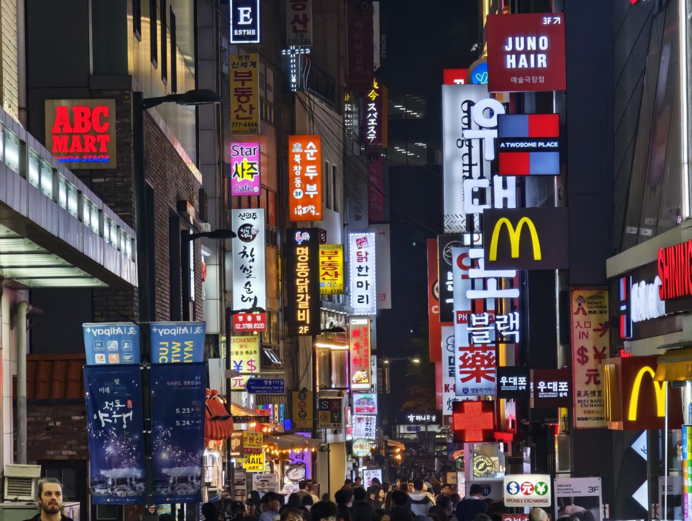

Myeongdong Shopping Street: A Practical Guide to Seoul’s Busy Retail District
Myeongdong Shopping Street is one of Seoul’s best-known places to shop, but it is not a single mall with one entrance or set of opening hours. It is a busy central district of streets and side lanes lined with shops, restaurants, and, at times, street-food stalls. The appeal is variety: visitors can browse beauty products and clothing, look for small gifts, and take a break for a snack without leaving the neighborhood.
That energy is also the main thing to prepare for. Myeongdong can be crowded, especially around its busiest shopping areas, and the experience may feel hectic if you are expecting a calm, carefully curated shopping street. Go with a loose plan, keep an eye on your belongings, and leave enough time to wander beyond the first row of storefronts.
What you’ll find in the district
Beauty shopping is a major draw, with many visitors coming to compare skincare and cosmetics. Fashion, accessories, and souvenir shopping are also part of the mix. The exact stores and stock can change, so treat Myeongdong as a place to explore rather than relying on a particular shop being there. If you have a specific brand or item in mind, check its current location before setting out.
Street-food stalls may add another layer to the visit, but their presence and selection can vary. Look around when you arrive rather than planning your whole meal around a particular stall. If you have dietary restrictions or allergies, ask about ingredients directly; do not assume a dish is suitable based only on its appearance or a brief description.
For a more satisfying browse, dip into side streets as well as the busiest thoroughfares. Compare products and prices before buying, especially when you see similar items in several shops. Keep receipts and check packaging before leaving a store, particularly if you are buying gifts or products you plan to pack in checked luggage.
How to plan your visit
There is no single ideal amount of time for Myeongdong. A quick pass through the district can work if you only want to look around, while a longer visit leaves room for shopping, food, and unhurried browsing. Because individual businesses set their own schedules, opening times can differ from one shop to the next. Check the current hours of any must-visit store rather than assuming the whole district operates on one timetable.
Wear comfortable shoes: you will likely spend much of your visit on foot, moving between storefronts and busy pedestrian areas. A small bag is easier to manage in crowds than bulky luggage. If you are carrying shopping bags, keep them close and take a moment to regroup before crossing a busy street or checking your route.
Bring a payment method you can use confidently, but do not assume every stall or shop accepts the same options. Payment methods can vary, particularly between larger retailers and independent vendors. If you plan to make a substantial purchase, confirm the accepted payment method before you shop.
Getting oriented and being considerate
The listed address is Myeong-dong 2(i)-ga, Jung District, Seoul, but the shopping area covers multiple streets rather than one precise storefront. Use the Google Maps link below to navigate to the district, then follow the map to the particular shop or section you want. Save your accommodation’s address as well, so you can find your way back without relying on memory.
In crowded areas, walk at a steady pace and step aside before stopping to check your phone or take photos. Be mindful of other shoppers, people carrying goods, and residents going about their day. If you are photographing a stall or shop, ask before taking close-up pictures of staff or customers.
Good to know
- Shop hours vary: Myeongdong is a district, not one centrally managed attraction. Confirm schedules with individual businesses.
- Street food is not guaranteed: Stalls and offerings may differ by day or time. Check what is available when you visit.
- Check before purchasing: Compare similar products, inspect packaging, and keep your receipt.
- Ask about tax refunds: If you are an eligible visitor, ask the retailer whether your purchase qualifies and what steps are required. Rules and procedures may depend on the store and purchase.
- Expect a lively atmosphere: Crowds and noise are part of the experience, so consider visiting another nearby area if you want a quieter break.
- Use the map for a specific destination: The address identifies the district, not a single shop or entrance.
Is Myeongdong Shopping Street worth visiting?
Myeongdong is a good fit if you enjoy browsing a dense retail district and like having shopping, snacks, and gift-hunting in the same outing. It is less suited to visitors who want a quiet stroll or a predictable, one-stop shopping experience. Go with a few priorities, stay flexible about what is open, and give yourself time to explore. The district’s appeal lies as much in the variety and atmosphere as in any one particular store.
FAQ
Where is Myeongdong Shopping Street?
It is in Myeong-dong 2(i)-ga, Jung District, Seoul. The shopping area spans multiple streets, so use a map to locate a specific store or starting point.
What can I shop for in Myeongdong?
Visitors commonly browse beauty products, fashion, accessories, and souvenirs. Shops and stock change, so check ahead if you are looking for a particular brand or item.
Are shops and street-food stalls open at the same times?
No single schedule applies to the whole district. Business hours and stall availability can vary, so check individual shops and confirm what is operating on the day of your visit.